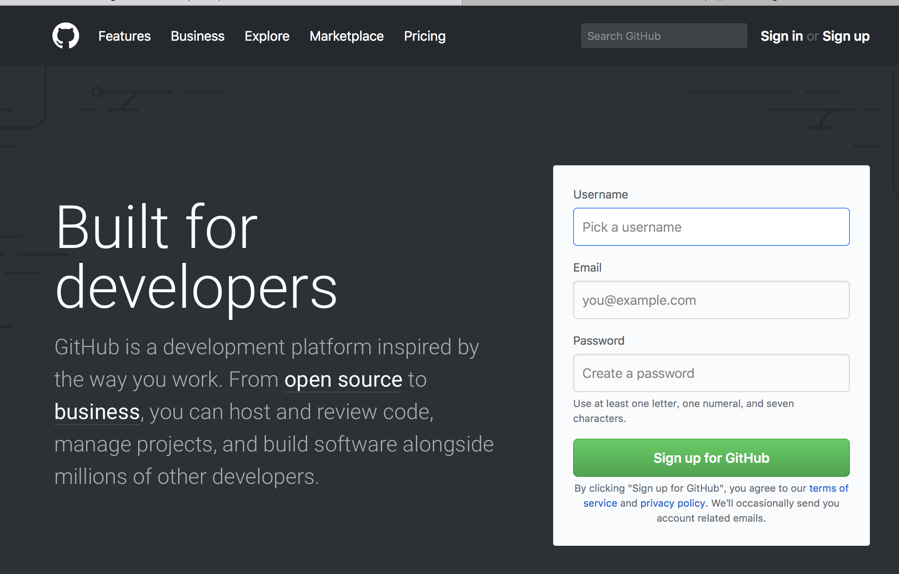
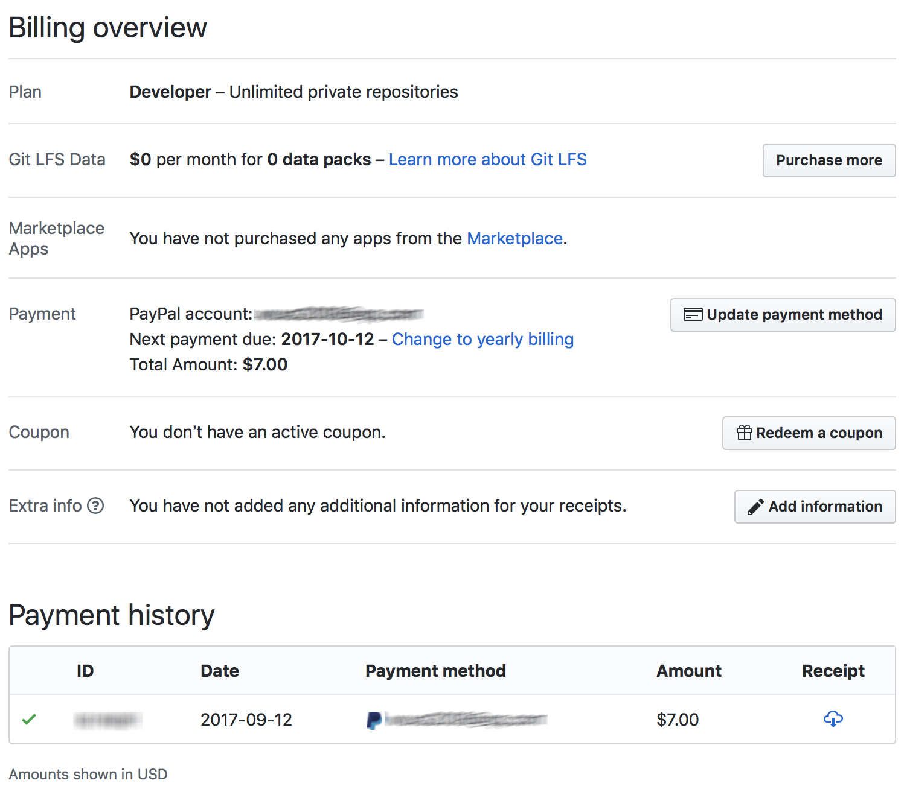
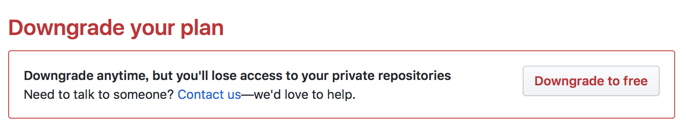

GitHub是一个面向开源及私有软件项目的托管平台，因为只支持git 作为唯一的版本库格式进行托管，故名gitHub。 gitHub于2008年4月10日正式上线，除了git代码仓库托管及基本的 Web管理界面以外，还提供了订阅、讨论组、文本渲染、在线文件编辑器、协作图谱（报表）、代码片段分享（Gist）等功能。目前，其注册用户已经超过350万，托管版本数量也是非常之多，其中不乏知名开源项目 Ruby on Rails、jQuery、python 等。
1､注册账号：这个大家都会，就不多说了。
2､创建库：即Repository，简称为 repo。这个是用来保存你的某一个项目的所有内容的库，你可以在里面放任何东西。
私有库还是公开库？
GitHub上的库分两种，一种是私有的，一种是公开的。私有库，很明显示，只能是该库的拥有者或参与者能够看到，其他人是不能访问这个库的，即使搜索也搜索不到。公开库：任何人都能看到，也可以参与修改。
但是，未付费账号是不能创建 private 库的，您必须缴费，现在的价格是每月7美元，大约50元人民币/月。遗憾的是，GitHub 只支持两种付费方式：信用卡 或 Paypal。
当然，您在付费后，也可以将您的账号再降级为免费。降级后，您不再拥有私有的库。
在Github 界面的右上角，有一个+号，打开菜单，选择“New Repository”，进入创建库的界面。如下图：
说明： 库的名称不能是中文，如果你输入中文名称，保存后，将变为“-”。库名也不能有空格，空格自动转换为“-” 在此，你可以选择将此库设置为公开的，或者是私有的。同时，可以自动增加一个markdown格式的readme文档。虽然此处的说明是，选择此选项后，将会自动克隆到你的计算机上，但我操作的过程中并没有实现这一步。创建后的库如下图： 1､虽然可以使用命令进行代码的提交和修改，但更方便的操作还是图形化界面。下载地址：https://desktop.github.com。在这里你可以选择下载 Windows 版或 Mac 版 2､将库克隆到你的本地电脑。点击上图中的set up in desktop，将打开你的 github.app（或 Windows 版的 github 客户端）,并将库克隆到你的电脑上。当然，你需要指定一个存放位置。克隆后，在指定位置将会创建一个文件夹，文件夹的名字就是你的库名。这时，github 客户端的界面是这样子的： 3､在本地库文件夹中，以你熟悉的任何方式创建一个index.html文件，当然，你可命名任意的文件类型或名称，此处以最简单的html文件为例。这时，再打开 github 客户端，你就会发现，它提示你已经有了改变： 点击下方的 commit to master 按钮，它会提示你写一点注释，以便别人知道你做哪些改动。输入注释，并提交后，界面就变成下面的样子了： 【注意】：此处的提交，只是把改动保存到本地了，还没有同步到服务器。要同步到服务器，你需要点击右上角的“publish”按钮（该按钮第一次显示为：publish，以后将变为“sync”）。如下图，灰色的小圆点代表已同步过的修改；而灰色的小圆圈，代表已提交，但还未同步的修改；蓝色的小圆圈，代表当前版本的位置。点击上面的“history”标签，可以打开修改、提交的记录。 同步结束后，我们再打开 web 界面，这时，我们会发现，库中已经有你提交的index.html文件了。四、下载客户端-修改代码内容-提交-同步